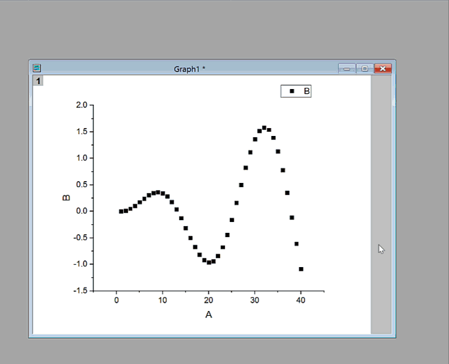
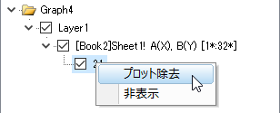
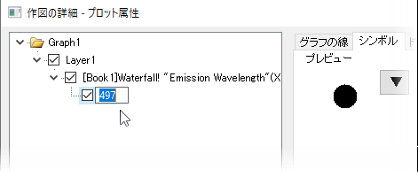

FAQ-191 散布図の1つのデータポイントを編集するにはどうしたらよいでしょうか?
Customize-Single-Data-Point
最終更新日：2021/3/10
単一のデータポイントについて、それが作図グループ内のものであっても、表示プロパティを編集することができます。データポイント同士の管理は線、シンボル、線+シンボル、縦棒／横棒グラフ、ボックスチャートなどのグラフで利用可能です。
単一のデータポイントの表示を修正する方法
- CTRLキーを押しながら、データポイントをクリックします。ミニツールバーを使用するか、スタイルおよび書式ツールバーを使用してポイントを編集します。ミニツールバーは、単一ポイントにラベルを追加したり、エラーバーを編集したりするなど、さまざまな編集項目を提供しています。
- CTRLキーを押しながら、データポイントをダブルクリックします。すると、作図の詳細ダイアログが開くので、ここで単一ポイントのプロパティを修正します。
- CTRLキーを押しながら、データポイントをクリックします。選択したポイントを右クリックして、ショートカットメニューからポイントの編集を選びます。 これにより、データポイントに対して編集操作を行う作図の詳細ダイアログボックスが開きます。
次の画像は、作図の詳細を使用したポイントプロパティの編集方法を示しています。
- 
既存の特別なポイントを削除する方法
作図の詳細ダイアログを開きます。左パネルのデータポイントの上で右クリックし、削除を選択します。
- 
 | Origin 2018から、グラフの凡例で右クリックしてから凡例：凡例の再構築を選択、またはホットキーCtrl+Lを使用して、特別なポイントを凡例に自動追加することが出来ます。
|
| プロットの最初または最後に特別なポイントを追加することは、たとえば多くのデータポイントの折れ線グラフのように、必ずしも簡単ではありません。しかしながら、簡単で間違いのないテクニックがあります。
- プロット上の任意の場所で特別なポイントを選択し、ダブルクリックして作図の詳細を開きます。
- 作図の詳細の左側のパネルで、ポイントインデックス番号を1回クリックし、インデックス番号が編集可能になるまで待ちます。
- 
- プロットの最初のポイントに特別なポイントを追加するには、開始と入力します。 最後のポイントに追加するには、終了と入力します。最初または最後のポイントのインデックス番号がわかっている場合は、代わりにそれを入力できます。
- 編集ボックスの外側をクリックします。必要に応じて、その他の特別なポイントのカスタマイズを行うには、適用をクリックするか、OKをクリックして、作図の詳細を閉じます。プロットの最初または最後に特別なポイントが追加されます。
|
Keywords:単一のデータポイント, シンボル, 散布図, マーク, ポイントの削除, 特定のポイントの削除